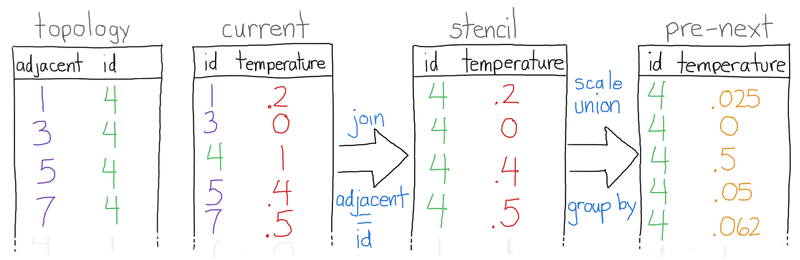

## A Scientist's Guide to the Relational Data Model ## ### or (One Reader to Rule Them All) ### [Jon Woodring](https://github.com/jonwoodring) <small>*Los Alamos National Laboratory*</small> LambdaConf 2017 <small>May 26, 2017</small>
## Outline ## [github.com/jonwoodring/ortrta](https://github.com/jonwoodring/ortrta) Content for both scientists and functional programming enthusiasts - Data analysis in scientific computing - SQLite to the rescue - Parallel computing - Why stop at just analysis? - Where to go from here...
## Trifecta of Data Parallelism ## I am going to weave a story of how "relational data model", "functional programming", and "data parallelism" are all intertwined. To ruin the punchline, it's not *Spark* -- whatever it is doesn't exist, yet, except in pieces.
### Scientific Computing ### Numerical models & computer simulations for things like physics -- also, data processing for real-world experiments, like [telescopes](http://www.sdss.org) and [accelerators](https://home.cern/topics/large-hadron-collider) <a href="https://mpas-dev.github.io"> <img src="local/oceanImage.png" width=325> </a> <a href="https://www.alcf.anl.gov/projects/next-generation-cosmology-simulations-hacc-challenges-baryons"> </a> *Other examples*: plasma, hydrodynamics, wind farms, ground water, molecular dynamics, asteroid threat assessment, natural disaster assessment, epidemic prediction, economic modeling, power grid, etc.
### Scale ### Large-scale simulations require thousands to tens-of-thousands processors running on supercomputers Some Department of Energy (DOE) supercomputers: - [Mira](https://www.alcf.anl.gov/mira) at Argonne National Laboratory - [Summit](https://www.olcf.ornl.gov/summit/) at Oak Ridge National Laboratory - [Cori](http://www.nersc.gov/news-publications/nersc-news/nersc-center-news/2016/cori-supercomputer-now-fully-installed-at-berkeley-lab/) at Lawrence Berkeley National Laboratory - [Trinity](http://www.lanl.gov/projects/trinity/) at Los Alamos National Laboratory
### Large-scale Simulations mean Large-Scale Data ### - With [MPAS-O](https://mpas-dev.github.io/), an ocean climate simulation - they run on the order of hundreds of simulated years for climate studies, resulting in tens to hundreds terabytes (TB) of data for one run - With [HACC](https://www.olcf.ornl.gov/2013/11/05/code-for-largest-cosmological-simulations-ever-on-gpus-is-gordon-bell-finalist/), a dark matter cosmology simulation - from the beginning of the simulated universe, a "heroic" run would take several petabytes (1 PB = 1,000,000 GB) - Parameter sweep - runs over multiple ranges of inputs, multiply these numbers by X
### Custom data formats ### And nearly always, they have a custom data format - Various reasons - Legacy code before HDF5 and NetCDF - Small scientific teams without software engineering expertise - Speed (storage I/O is the slowest component!) - This makes it a pain to do any analysis, because the first task is creating a reader for their data (or a translator to copy it to a common format)
### ParaView and VisIt ### In the DOE, we have two open-source scientific visualization and analysis tools: [ParaView](http://paraview.org) and [VisIt](https://visit.llnl.gov) I counted **150** readers in ParaView alone, and VisIt has more readers than ParaView! And that's not counting the ones in [VTK](http://vtk.org) (Visualization ToolKit) - over **250**! <a href="http://paraview.org"> </a>
### Example analysis workflow ### Typically a scientific workflow goes something like: - Encounter a new scientific team - Retrieve data from them - Either - Create a new reader for their data - Translate their data into a common format - Visualize and analyze their data In the following, we'll analyze a simple heat transfer simulation for an example analysis workflow
### Jupyter Python Notebook ### <= **To follow along:** ```bash $ jupyter notebook jupyter/heat.ipynb ``` - Data from a Fortran heat simulation - Simple tab separated values format, but one file per time step and per processor - Custom reading of the data - Specialized code to read in data by processors - Plotting the read data - Data is in memory now, apply operations
### Querying (apply-filter-combine) ### *But that was simple:* What if we want to query the data? In particular, do a plot of the maximum temperature over time? - Read each time step - Collect the maximum from each time step - Sort the data by time - Plot This is potentially a lot of Python code.
### Why not Data Frames? ### *Why not load our data into a data frame, like Pandas? R data frames? into a list of tuples? a tuple of lists?* We *are* going to do that, but 1. **directly** represent our scientific data as if it were a data frame, 2. **without copying**, 3. with **streaming**, because data will not be copied into memory, 4. and it will be **reusable** in other tools It's not a data frame, but a **table**. <!-- END SLIDE -->
### SQLite - One Reader to Rule Them All ### <a href="https://sqlite.org"> </a>
### Simulation Data as a Table ### SQLite [Virtual Table](https://sqlite.org/vtab.html) on the Fortran data set: - perform SQL queries on it - no ingest, the data sits at rest (**no copy!**) - same function as data frames, but better - readable in anything that understands SQLite - streaming, out-of-core - caveat, it does require *extension loading* (or compiling your virtual table into SQLite) <= **Back to the notebook**
### Notebook with SQLite ### - Inspect the data set - *reduce* aka *fold* - Image queries - *sort by* - *filter* - *map* aka *transform* - Time queries - *group by* - Complex query - *join* aka *merge* (we'll talk more about join later)
### Structure of a SQL query ### SQL, i.e., [relational algebra](https://en.wikipedia.org/wiki/Relational_algebra)\* semantics, largely overlap with *traversable (iterable) combinators* - `select` *map and reduce functors\** - `from` *traversable of tuples* - `where` **filter functors** - `group by` *key functor* - `order by` *key functor* <small> \*aside from dispute between relational algebra formalism and SQL as practiced, as it does not strictly adhere to the formalism -- but that's true of any engineered system \*and by functor, I mean a function that is passed to another function, not the functor typeclass in Haskell </small>
### Lazy Eval and Immutability ### - Views provide lazy evaluation - `CREATE VIEW QUERY AS` - Allows you to build up complex evaluations and they aren't executed until needed - If you need to cache the data, save it in a temporary table - `CREATE TEMPORARY TABLE CACHED AS` - Immutability - If you avoid `INSERT`, `UPDATE`, and `DELETE` - Views are immutable, too
### Functional SQL in R ### [dplyr](https://github.com/tidyverse/dplyr) is a DSL for R, created by Hadley Wickham <= **To follow along** ```bash $ rstudio-bin r/heat.rmd ``` - This uses the *same* SQLite virtual table adapter for our simulation data in Python - Translates the traversable pattern to SQL - Chaining of transformers - mutate (map), summarize (reduce), filter, etc. - Lazy evaluation - Builds up the query and nothing is fetched until a "sink" (i.e., side effect)
### *dplyr* Examples ### Works with both *SQL* databases **and** *Spark* - Loading data via *dplyr* - Querying using combinators - Plotting time series data - tables => transformers => graphics transformers via *ggplot* => image - Plotting several time series data - Creating a histogram from scratch - Seamless with Spark via *sparklyr* *(not shown)* - Execute with the same pattern and move data
### Creating a SQLite Virtual Table ### https://sqlite.org/vtab.html https://www.sqlite.org/lang_createvtab.html - Example code in C using the native API - API is well defined, such that it should be "easy" to do it in any language that supports C exports (foreign function interfaces) - For example, Python with [`apsw`](https://github.com/rogerbinns/apsw) ** <= Opening the code on the left ** ```bash $ grip -b sqlite/heat.md ```
### The API ### - Open and closing a *table* - Creating and closing a *cursor* - Telling SQLite our *indices* - Index from column values to rows, i.e., lookup - Starting a *query* - Iterating to *next* row in a query - Returning *column* values at a row - Indicating the *end* of a query Confusing?
### Metaphor: A List of Named Tuples ### - Create a list of named tuples: *table* - Bind list to name, i.e., iterator: *cursor* - Maps (associative arrays aka dictionaries) from values to tuples: *index* - Create a filter functor: *query* - Apply filter to list: *next* - Extract values from tuple: *column* - Nil (end of list): *end*
### Structuring our Data ### Heat transfer data into a relational table Map our data using SQLite virtual table API
### `xNext` - Iterating ### SQLite calls `xNext` to advance a query to the next row, like implementing the recursion of `map f x:xs`, where `x` is the row and `xs` is the rest of the table - cursor state passed in (`x:xs`) - while there are files left - parse filename - open file - while not end of file - read line from file - parse line - yield row (`x`)
### Is that all? ### Mostly! - See `sqlite/heat.md` for a complete annotated implementation - Iteration logic resides in `xNext` - End of list test is `xEof` - Column (tuple) data is `xColumn` and `xRowid` - State in `heat_table` and `heat_cursor` - Initialization of iteration (start of a query) - `xFilter` and `xBestIndex` - Implementation can be arbitrarily complex, though, but not necessarily complex
### xFilter and xBestIndex ### This is where you get speed from SQL queries by implementing *indexing* on your data set - Indexing is not required for correctness - Without indexing, SQLite will iterate over your entire data set (see the [query planner](https://sqlite.org/queryplanner.html)) - It will filter out data that it doesn't need - Providing indexing accelerates queries - SQLite will negotiate indexing via `xBestIndex` - It will then initialize a query with `xFilter` with the index and filter constraints - Your `xNext` implementation then seeks data based on the index and filter constraints
### Indexing Time Example ### - `SELECT * FROM heat WHERE time = 1700` - SQLite calls `best_index` with "`time =`" - `best_index` responds that it has that index - SQLite will then call `filter` with the constraints - `1700` on the "`time =`" index - `next` implementation applies the filter - Only reads files that have 1700 in the filename - Skips over entire files, saving lots of time Sky's the limit for indexing: hashmaps, tree indexing, bitmaps, etc. However you'd like to implement it.
### Portable Reader ### - Streaming, no ingest, no copying - Not tied to a particular tool via extension loading - Drawbacks - Magic compiler, aka the query optimizer, doesn't always do the best (optimization hints [here](https://sqlite.org/queryplanner-ng.html)) - SQL and SQLite is an interpreter - No distribution (sharding) for REALLY large data - Optionally, run SQLite interpreters in parallel to shard queries and gather results (except joins)
### Switching Gears: Data Parallelism ### Data parallelism is applying the same program to all data elements: Single Instruction Multiple Data (SIMD) or Single Program Multiple Data (SPMD) - **It's the style we've been using in our SQLite** - Nowadays, it's been called "map-reduce" - It shows up in *Spark*, *dplyr*, graphics, GPU programming, relational data (databases), etc. - It's very similar to the traversable pattern in functional programming, i.e., iterables, lists, etc.
### The Programming Style ### - Using iterable (traversable) transformers - *No* array indexing, *no* explicit for loops - map, reduce, filter, concat (flatten), etc. - Avoid "nested parallelism" or "double for loops" - No lists in lists or the "closure problem" - An inner scope dependent on an outer scope can't be easily parallelized - Use immutable data (read-only to write-target) - Reduce data dependencies by "double-buffering" - Mutation-in-place creates serial dependencies
### Why do we care? ### - If we write in a data parallel style, code can be automatically parallelized - Parallel programming is hard - A strategy to ease implementation that shares benefits with functional programming - Large-scale data and supercomputing - The same reason to use Spark or Hadoop 1. Automatically parallelizable 2. Program scales with the data 3. Potentially less code to maintain
### It's not new (Non-exhaustive list) ### - Early pioneers in vector data parallelism - Guy Belloch and [NESL](https://www.cs.cmu.edu/~scandal/nesl.html), a data parallel language - [Connection Machine](https://en.wikipedia.org/wiki/Connection_Machine) - [Data Parallel Haskell](https://wiki.haskell.org/GHC/Data_Parallel_Haskell) was inspired by Blelloch's work - [Thrust](https://developer.nvidia.com/thrust) by Nvidia largely uses the vector data parallel design for generically programming multi-core CPUs and GPUs - it is influencing the next C++ revision - Recently, [Alex Ulrich](http://db.inf.uni-tuebingen.de/team/AlexanderUlrich.html) developed [Database Supported Haskell](https://hackage.haskell.org/package/DSH) using Blellochs's flattening transform - Program with Haskell list comprehensions on databases, allows nesting like NESL
### Nested parallelism in Relational Land ### Relational programming has flattening transforms - *Join* is a fancy Cartesian product with a filter - It takes two lists and returns a list - `[filter f (x, y) | x <- xs, y <- ys]` - With various configurations of how to iterate over the two lists: inner, outer, left, right, etc. - *Group by* aka *partition by* aka *sort* - Segments a list into lists, applies a functor to each sub list, and then flatmaps the result - `concat (map f (groupBy g xs))`
### But, it's hard and requires practice ### - Rethinking how to solve problems and algorithms - It may be easier if you are coming from a functional programming or database background - It may be harder if you are coming from a scientific computing background, where the data model is mutable arrays and for loops
### Worth the effort (in my opinion) ### - A style for describing portable parallel programs - Write once, run most anywhere - Examples: *SQL, Thrust, Spark, [Flink](https://flink.apache.org/)* - Shares many of the benefits of functional style - Chaining for incremental design - Data safety through immutability - By showing you the relational data model, SQLite virtual tables, and various applications: - Learn relational and functional style by example - Learn parallel programming by proxy - Learn portable techniques for data processing
### But, why stop at just data analysis? ### One of the things that I find strange is that scientific simulations are a data parallel problem, too, but - Simulations get written in - Fortran, C/C++, Matlab, Python (numpy), Julia, etc. - Imperative array based languages - Doing things in parallel is hard - If simulations are data parallel problems (which they are), then...
### Next stop, Crazy Town ### Why not use a relational/functional/data parallel programming style for the simulation, too? For the Fortran simulation, I have implementations in: - Haskell + Repa, C++ + Thrust, Scala + Spark - ...and one really crazy one, saved for last
### Little background ### We're simulating a 2D plate that is hot in several places (the initial condition) and how it dissipates over time - Explicit, finite-differences method - Iterative in time, state *t+1* is calculated from *t* - The plate is discretized into a 2D grid - See the code in `fortran/heat.md` for a more detailed explanation and [links](https://en.wikipedia.org/wiki/Heat_equation)
### Stencil on a 2D grid### The main update step is called a ["stencil"](https://en.wikipedia.org/wiki/Five-point_stencil) - This is conceptually a weighted average of 5 adjacent points - heat dissipates spatially - For all time steps: *t* (left), *t+1* (right) is calculated by - For all points in the grid - Apply the stencil (middle) - New value is the average of 5 points
### Serial Fortran Code ### The main loop is several nested for loops: one for time and two for applying the stencil ```fortran do t = 1, 10000 current = modulo(t, 2)+1 next = modulo(t+1, 2)+1 do j = 1, 200 do i = 1, 200 grid(i, j, next) = 0.5 * grid(i, j, current) + 0.125 * grid(i+1, j, current) + 0.125 * grid(i, j+1, current) + 0.125 * grid(i-1, j, current) + 0.125 * grid(i, j-1, current) end do end do end do ```
### Serial Fortran to Serial Haskell ### We're going to deconstruct the Fortran code into the equivalent Haskell code, using *Repa* for our arrays. - See `haskell/heat.md` for the annotated code* - We'll deconstruct it bottom up 1. The stencil, updating the heat at a point 2. The update step, updating all points 3. The forward time iteration, calculating *t+1* from *t* <small>*Certain details in the following have been omitted. See the code for more details.</small>
### The Stencil ### <small>Fortran</small> ```fortran 0.5 * grid(i, j, current) + 0.125 * grid(i+1, j, current) + 0.125 * grid(i, j+1, current) + 0.125 * grid(i-1, j, current) + 0.125 * grid(i, j-1, current) ``` - `grid` is a function in Haskell - it returns the point at (i, j) - in Fortran, it is an array <small>Haskell</small> ```haskell stencil grid (Z :. i :. j) = 0.5 * (grid (Z :. i :. j)) + 0.125 * (grid (Z :. i+1 :. j)) + 0.125 * (grid (Z :. i :. j+1)) + 0.125 * (grid (Z :. i-1 :. j)) + 0.125 * (grid (Z :. i :. j-1)) ```
### The Update Step ### <small>Fortran</small> ```fortran do j = 1, 200 do i = 1, 200 grid(i, j, next) = ``` - `traverse current id stencil` - is a `map` for *Repa* arrays - Applies `stencil` to all points in the grid `current`, which is *t*, and returns *t+1* <small>Haskell</small> ```haskell update_step current = traverse current id stencil ```
### Forward time iteration ### <small>Fortran</small> ```fortran do t = 1, 10000 current = modulo(t, 2)+1 next = modulo(t+1, 2)+1 ``` - In Haskell, *t+1*, `next`, is calculated from `current` - In Fortran, it is done through "double-buffering" - Buffer swapping is common in imperative parallelism - Same function as immutability, as there is no mutation-in-place -- previous state is read-only <small>Haskell</small> ```haskell loop t current = do next <- update_step current if t < 10000 then loop (t+1) next else return () ```
### Serial Haskell in total ### ```haskell stencil grid (Z :. i :. j) = 0.5 * (grid (Z :. i :. j)) + 0.125 * (grid (Z :. i+1 :. j)) + 0.125 * (grid (Z :. i :. j+1)) + 0.125 * (grid (Z :. i-1 :. j)) + 0.125 * (grid (Z :. i :. j-1)) update_step current = traverse current id stencil loop t current = do next <- update_step current if t < 10000 then loop (t+1) next else return () ``` There isn't much difference, as they are about the same number of lines of code. Haskell is implicitly immutable, whereas in Fortran we are using a double-buffering pattern to get immutability. *So, let's make it parallel...*
### Shared Memory Parallelism ### - It assumes that all threads have access to the data, i.e., we are running on a multicore machine or GPU - When this happens, we can evenly divide the work between threads - Data parallelism removes data dependencies allowing threads to work independently (SIMD) - We can do this because the data is immutable - No mutation in place - Independent threads do not have to coordinate
### Avoiding Serialization ### Mutation-in-place creates serialization <img src="local/fanin.png" width=300> - There is a way to solve the stencil with one array, using mutation, but it can only be done in serial - Fan-in (data dependencies) creates serialization - The goal is to minimize these fan-ins and immutability helps minimize them - *Spark*'s dependency graph (directed acyclic graph, DAG) shows the serialization points
### Shared Memory Parallel Fortran* ### From this: ```fortran do j = 1, 200 do i = 1, 200 grid(i, j, next) = ... ``` To this: ```fortran !$ OMP PARALLEL DO do j = 1, 200 do i = 1, 200 grid(i, j, next) = ... !$ OMP END PARALLEL DO ``` This is using OpenMP and the outer loop, the j dimension, will be divided among a pool of threads <small>*This code example is not in fortran/heat.md.</small>
### Nested Do Loops ### We could add a second $! OMP PARALLEL DO, like so ```fortran !$ OMP PARALLEL DO do j = 1, 200 !$ OMP PARALLEL DO do i = 1, 200 grid(i, j, next) = ... !$ OMP END PARALLEL DO !$ OMP END PARALLEL DO ``` 1. The inner loop will only be parallelized if you turn on nested parallelism in OpenMP 2. Nesting is optional because it's hard to automate - How many threads should be launched in comparison to the outer loop? What if the inner loop work size is dependent on the outer loop?
### Shared Memory Parallel Haskell ### From this: ```haskell update_step current = traverse current id stencil ``` To this: ```haskell update_step current = computeP $ traverse current id stencil ``` - Repa flattens the 2D array, i.e., nesting - `traverse` is like `map` - Though, we don't know the traversal order and cross our fingers that Repa divides the work evenly for the multi-dimensional array *So, let's look into explicit flattening*
### Nested Parallelism ### Given a simple 4x4 grid, how should we split up this work across 4 processors, especially at run-time? In the OpenMP nested case, what if 4 threads were already launched on the outer loop, dimension j? Our 2D static array case is easy, but it can be hard if the workload is imbalanced or varying. Explicit flattening makes the run-time work division easy.
### Flattening ### Turn an N-D array into a 1D array - This is the computational model behind SIMD arrays, Thrust vectors, GPU programming, relational tables, Spark RDDs, etc. - It's portable and trivially parallelizable - Blelloch's flattening (compile-time) and Repa turns nesting into a flat list, i.e., concat/flatmap, - **My opinion is to learn flattening** - Why? Fundamentals, Performance, and Control
### Flattening in Practice - Thrust ### In Thrust, our only choice is 1D iterators ```c++ transform( omp::par, // Run on GPUs only by changing this line! make_zip_iterator(make_tuple(current->begin(), ... ), make_zip_iterator(make_tuple(current->end(), ... ), make_counting_iterator(0), next->begin(), stencil()); ``` - A 2D array is explicitly flattened to a 1D array - `current` is a flattened version of the 2D array - `transform` is `map` and it is mapping the `stencil` over all of *t* to generate *t+1* - `next`, *t+1*, receives the output of the transform - How are we getting the 2D array positions? <small>See thrust/heat.md for more information</small>
### Zip Iterator ### We zip several read-only copies of *t* together ```c++ make_zip_iterator(make_tuple( current->begin(), // (i, j) current->begin() + 1, // (i+1, j) current->begin() - 1, // (i-1, j) current->begin() + 200, // (i, j+1) current->begin() - 200)) // (i, j-1) ``` - Create references of *t* and zip them together - This is still 1D and still easily parallelizable - i+1 is offsetting by 1, or j+1 is offsetting by +200 - We can use explicit "indexing" arrays -- zip an array that serves as an array look up index <small>See thrust/heat.md for more information</small>
### Thrust 1D Indexing ### We can do N-D arrays through fancy 1D indexing - The stencil is done through explicit indexing that allows us to look up the values that we need - This allows us to use arbitrary geometry, not just arrays, through recording the "topology" - 1, 3, 5 and 7 is the incident topology around 4 - This is a *relationship* on point 4
### Heat Equation in Spark ### I'm just going to throw this out there ```scala next = topology .join(current) .map { case (adjacent, (id, temperature)) => (id, .125 * temperature) } .union(current.mapValues { case (temperature) => .5 * temperature }) .reduceByKey { (a, b) => a + b } ``` We'll walk through it, because this is a tough one. Let's take the example of our simple 3x3 grid with point 4 in the center. <small>see scala/heat.md for a full annotated version</small>
### Key-Value Pairs ### Consider the points around 4 as relationships - We express this as pairs, *(adjacent, id)*: - (1, 4), (3, 4), (5, 4), and (7, 4) - Let's make up some temperatures - 4 = 1.0, 1 = .2, 3 = 0, 5 = .4, and 7 = .5 - Given the example temperatures, lets express them as pairs, *(id, temperature)* - (1, .2), (3, 0), (4, 1), (5, .4) and (7, .5) - Given these key-value pairs, both the points adjacent to 4 and their temperatures, how do we calculate the stencil on point 4?
### Stencil as a Join (1) ###  - Consider point 4, it is adjacent to 1, 3, 5, and 7 - These pairs can recorded in a *topology* list
### Stencil as a Join (2) ### - Each point has a key-value temperature pair - These point-temperature relationships can be recorded in a *current* list
### Stencil as a Join (3) ### - We can look up (index) the temperatures surrounding point 4 by a *join* on *adjacent* and *id* between *topology* and *current* - This produces pairs of *(adjacent, (id, temperature))* - We *map* the pairs from the join to *(id, temperature)* producing a *stencil* list of *(id, temperature)*
### Stencil as a Join (4) ### - If we scale the *current* table by 0.5 and the *stencil* table by 0.125, we effectively multiply the temperature by the stencil weights - Taking the union of these two tables, we get the temperatures keyed by *id* that make up the stencil
### Stencil as a Join (5) ### - The final step is to *reduce by key* with +: - 0.25 + 0 + 0.5 + 0.05 + 0.62 = .637 - The new temperature for 4 is .637, recorded as a pair (4, .637) - **Whew!**
### What's going on? ### - Consider an array *a* using Python notation - `a[0] = value` - What if *a* was a *map* (dictionary) from *i* to *value*, *b* - `b[0] = value` - What if I express *a* as a list of tuples, *c*? - `c = [(0, value)]` - How do I get the values from each, if I have an *indices* list, `indices = [0]`?
### Array indexing is Join ### ```python for i in indices: if i <= len(a): print(a[i]) for i in indices: if i in b: print(b[i]) for i, j in product(indices, c): # product is Cartesian product if i == j[0]: print(j[1]) ``` Each of these is a *join*, the first two are *left join*s Recall way back when when I said *join* is a fancy Cartesian product? This is what I meant
### Join, Map, and Reduce as a Stencil ### - Arrays are *map*s (dictionary) of integers to value - Stencils are joins of integer lists on maps of integers to values, resulting in value lookup - With a map and reduce to complete the operation - Why is this important? - We can express the stencil as a join - Spark is distributed data parallelism - Up until now, we have only been talking about shared memory parallelism, this shows how we can bridge the gap and scale up
### Distributed Parallel Fortran* ### The Fortran implementation that I have is actually distributed parallel, but it's a doozy if you aren't accustomed to MPI (Message Passing Interface) Here's just a fragment of the code I had to implement to make the processors coordinate with each other. This is why I say parallel programming is hard... <small>* see fortran/heat.md for more details</small> ```fortran ! 0 shares with 1 and 3 if (my_pid == 0) then call mpi_send & (local_domain(1:lx,ly), lx, MPI_REAL8, 3, 0, MPI_COMM_WORLD, ierror) call mpi_send & (local_domain(lx,1:ly), ly, MPI_REAL8, 1, 0, MPI_COMM_WORLD, ierror) call mpi_recv & (local_domain(1:lx,ly+1), lx, MPI_REAL8, 3, 0, MPI_COMM_WORLD, stat, & ierror) call mpi_recv & (local_domain(lx+1,1:ly), ly, MPI_REAL8, 1, 0, MPI_COMM_WORLD, stat, & ierror) ! 1 shares with 0 and 2 else if (my_pid == 1) then call mpi_send & (local_domain(1:lx,ly), lx, MPI_REAL8, 2, 0, MPI_COMM_WORLD, ierror) call mpi_send & (local_domain(1,1:ly), ly, MPI_REAL8, 0, 0, MPI_COMM_WORLD, ierror) call mpi_recv & (local_domain(1:lx,ly+1), lx, MPI_REAL8, 2, 0, MPI_COMM_WORLD, stat, & ierror) call mpi_recv & (local_domain(0,1:ly), ly, MPI_REAL8, 0, 0, MPI_COMM_WORLD, stat, & ierror) ! 2 shares with 1 and 3 else if (my_pid == 2) then call mpi_send & (local_domain(1:lx,1), lx, MPI_REAL8, 1, 0, MPI_COMM_WORLD, ierror) call mpi_send & (local_domain(1,1:ly), ly, MPI_REAL8, 3, 0, MPI_COMM_WORLD, ierror) call mpi_recv & (local_domain(1:lx,0), lx, MPI_REAL8, 1, 0, MPI_COMM_WORLD, stat, & ierror) call mpi_recv & (local_domain(0,1:ly), ly, MPI_REAL8, 3, 0, MPI_COMM_WORLD, stat, & ierror) ! 3 shares with 0 and 2 else call mpi_send & (local_domain(1:lx,1), lx, MPI_REAL8, 0, 0, MPI_COMM_WORLD, ierror) call mpi_send & (local_domain(lx,1:ly), ly, MPI_REAL8, 2, 0, MPI_COMM_WORLD, ierror) call mpi_recv & (local_domain(1:lx,0), lx, MPI_REAL8, 0, 0, MPI_COMM_WORLD, stat, & ierror) call mpi_recv & (local_domain(lx+1,1:ly), ly, MPI_REAL8, 2, 0, MPI_COMM_WORLD, stat, & ierror) endif ```
### Bonus Round ### To complete the loop **<= To follow along ** ```bash $ rstudio-bin dplyr/head.rmd ``` This is the crazy bit. I have implemented the heat equation in *dplyr* which is running on *SQLite*... which means, we are executing a heat equation in SQL. I've done it before, but not in this version, such that it is possible to write it natively in SQL, because SQLite is Turing complete via recursive queries.
### Concluding Thoughts ### As a scientist, why learn data parallelism and not just MPI and OpenMP? - Data parallelism is a key to - Programming GPUs and multicore processors - Portable parallelism - Data analysis - MPI (Message Passing Interface) is the defacto standard for distributed parallel computing in scientific and supercomputing - Requires a lot of bookkeeping, easy to screw up - But, highly performant
### Performance Gap ### There is a reason that no one in scientific and supercomputing uses Spark: *performance* - (and supercomputers don't run Java) - 10,000 iterations of the heat equation, 4 processors, 200x200 grid - Fortran + MPI: **3 seconds** - Thrust multicore CPU: 4.5 seconds - Haskell + Repa: 60 seconds - Scala + Spark: *30+ minutes* - dplyr + SQLite: *40+ minutes*
### Am I stupid? ### I'm sure someone will tell me how I went about the wrong way implementing it in Spark, - Or the scale of the problem was too small, or - Wrong tool for the wrong job - I don't disagree - But, numbers like these are the reason that supercomputing doesn't use this technology - Secondly, I'm interested in a relational-data parallel-functional cross-over, which is why I implemented it the way that I did in Spark - No need to explore more array languages, it's more Fortran: see Dask, Julia, etc.
### Next-Gen Spark? ### - Papers published on ["Spark for supercomputing"](https://github.com/SciPioneer/Smart) - Reimplements the core logic in MPI and C++ - Scientific computing and MPI can help optimize *join* - Ghost cells and partitioning strategies are a way to avoid all-to-all communication (the shuffle) - Automatically compile to GPUs or shared-memory multicore machines, ala Thrust - More joins, adding the missing relational ones - And the ability to plan parallel execution, i.e., flattening, based on index types, like arrays and hashmaps, for constant time lookup
### Thanks for listening! ### For more talks like mine on Supercomputing, see another Jonathan, [Jonathan Dursi](https://www.dursi.ca/)